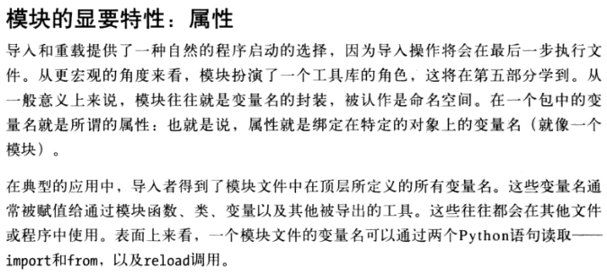

对Markdown的语法做一些整理，即使写文章时忘记语法，查起来也方便一点。
参考资料：
http://www.appinn.com/markdown/index.html
http://sspai.com/25137
标题
如果一段文字被定义为标题，只要在这段文字前加#号即可，#号和文字间要留空格。
# 一级标题
## 二级标题
### 三级标题
#### 四级标题
效果如下：(这里用的是显示效果的截图)

有序列表
在要设置为有序列表的文字前加1. 2. 3.可以变成有序列表，同样的.号和文字间要留空格。
1. 列表1
2. 列表2
3. 列表3
显示效果：
- 列表1
- 列表2
- 列表3
无序列表
无序列表的显示只需要在文字前加上-或即可变为无序列表，-或与文字间也要留空格。
* 无序列表1
* 无序列表2
* 无序列表3
显示效果：
- 无序列表1
- 无序列表2
- 无序列表3
列表嵌套
列表是可以嵌套显示的，不同层次的列表项，缩进至少一个空格到四个空格。
* 无序列表外层
* 无序列表中层
* 无序列表内层
* 无序列表中层
* 无序列表外层
* 无序列表外层
显示效果：
- 无序列表外层
- 无序列表中层
- 无序列表内层
- 无序列表中层
- 无序列表外层
- 无序列表外层
相应的有序列表也是如此。
1. 有序列表外层
1. 有序列表内层
2. 有序列表内层
2. 有序列表外层
3. 有序列表外层
显示效果：
- 有序列表外层
- 有序列表内层
- 有序列表内层
- 有序列表外层
- 有序列表外层
引用
在要引用的文字前加>号（大于号），>号与文字之间留空格。
> 这是引用文字
> 这里引用文字2
显示效果：
这是引用文字
这里引用文字2
插入链接
Markdown 支持两种形式的链接语法： 行内式和参考式两种形式。
行内式
This is [an example](http://example.com/ "Title") inline link.
[This link](http://example.net/) has no title attribute.
显示效果：
This is an example inline link.
This link has no title attribute.
如果你是要链接到同样主机的资源，你可以使用相对路径：
See my [About](/about/) page for details.
显示效果：
See my About page for details.
参考式
参考式的链接是在链接文字的括号后面再接上另一个方括号，而在第二个方括号里面要填入用以辨识链接的标记：
This is [an example][id] reference-style link.
也可以选择性地在两个方括号中间加上一个空格：
This is [an example] [id] reference-style link
接着，在文件的任意处，你可以把这个标记的链接内容定义出来：
[id]: http://example.com/ "Optional Title Here"
链接内容定义的形式为：
- 方括号（前面可以选择性地加上至多三个空格来缩进），里面输入链接文字
- 接着一个冒号
- 接着一个以上的空格或制表符
- 接着链接的网址
- 选择性地接着 title 内容，可以用单引号、双引号或是括弧包着
下面这三种链接的定义都是相同：
[foo]: http://example.com/ "Optional Title Here"
[foo]: http://example.com/ 'Optional Title Here'
[foo]: http://example.com/ (Optional Title Here)
有一个已知的问题是 Markdown.pl 1.0.1 会忽略单引号包起来的链接 title。（摘自网络，未验证）
插入图片
插入链接与插入图片的语法很像，区别在一个!号。插入图片比插入链接语法多一个!号。
 # 图片链接中不能出现空格
 # 图片链接中不能出现空格
详细叙述如下：
- 一个惊叹号 !
- 接着一个方括号，里面放上图片的替代文字
- 接着一个普通括号，里面放上图片的网址，最后还可以用引号包住并加上 选择性的 ‘title’ 文字
- 图片后缀的大小写要与实际图片名字带的后缀一样，例如，图片.PNG，对应的markdown文档中要写.PNG，而不是.png
插入图片同样也允许两种样式：行内式和参考式。
参考式的图片语法则长得像这样：
![Alt text][id]
「id」是图片参考的名称，图片参考的定义方式则和链接参考一样：
[id]: url/to/image "Optional title attribute"
特别的，不使用图床的图片而是使用本地图片的方法：
在 hexo/source 目录下新建一个 img 文件夹，将图片放入该文件夹下，插入图片时链接即为 /img/图片名称。（如果为了方便管理图片资源，可以为每个带图片的文章，在img再建一个与文章同名的文件夹用来放图片，当然引用图片的路径也要相应修改）
 # 图片链接中不能出现空格
或者
 # 图片链接中不能出现空格
下面是显示效果：

这种方式插入本地图片，不像其它语法能在 Markdown Pad 编辑器里马上看到显示效果，图片效果只能使用 Hexo g 生成后，再用 Hexo s 来查看效果。
虽然将图片与文章放同一文件夹且命令为非中文，可以在 Markdown Pad 编辑器里马上看到显示效果，但这样发布就有新问题要解决了，不要用这种方法。
到目前为止，Markdown还没有办法指定图片的宽高，如果需要的话，可以使用普通的 <img> 标签，直接写html。
代码块
在 Markdown 中建立代码区块很简单，只要简单地缩进4个空格或是1个制表符就可以。
这是普通段落：
这是代码区块
显示效果：
这是普通段落：
这是代码区块
代码块元素与无序列表元素中间需要有一些普通文本分隔，如果在无序列表后面紧跟着是一个代码块，则代码块并不能正常显示为代码块（不知道是 Markdown 语法的问题，还是 MarkdownPad2 的BUG)
插入代码
如果要标记一小段行内代码，你可以用反引号把它包起来。
Use the `printf()` function.
显示效果：
Use the
printf()function.
如果要在代码区段内插入反引号，你可以用多个反引号来开启和结束代码区段：
``There is a literal backtick (`) here.``
显示效果：
There is a literal backtick (`) here.
代码区段的起始和结束端都可以放入一个空白，起始端后面一个，结束端前面一个，这样你就可以在区段的一开始就插入反引号：
A single backtick in a code span: `` ` ``
A backtick-delimited string in a code span: `` `foo` ``
显示效果：
A single backtick in a code span:
`
A backtick-delimited string in a code span:`foo`
分隔线
在一行中用三个以上的星号、减号、底线来建立一个分隔线，行内不能有其他东西。
* * *
***
****
显示效果：
强调
Markdown 使用星号 * 和底线 _ 作为标记强调字词的符号，用两个 * 或者 _ 将要强调的文字包起来就可以。
*这是要强调的文字*
显示效果：
这是要强调的文字
如果要在使用粗体强调某部分内容，可以使用两个连续的 * 号开始，并以两个连续的 * 号结束，把要强调的内容包括起来，如：
**这是要粗体显示的文字**
显示效果：
这是要粗体显示的文字
段落和换行
一个 Markdown 段落是由一个或多个连续的文本行组成，它的前后要有一个以上的空行（空行的定义是显示上看起来像是空的，便会被视为空行。比方说，若某一行只包含空格和制表符，则该行也会被视为空行）。普通段落不该用空格或制表符来缩进。
「由一个或多个连续的文本行组成」这句话其实暗示了 Markdown 允许段落内的
强迫换行（插入换行符），这个特性和其他大部分的 text-to-HTML 格式不一
样（包括 Movable Type 的「Convert Line Breaks」选项），其它的格式会
把每个换行符都转成 <br /> 标签。
如果你确实想要依赖 Markdown 来插入 <br /> 标签的话，在插入处先按入
两个以上的空格然后回车。
的确，需要多费点事（多加空格）来产生 <br /> ，但是简单地「每个换行都转
换为 <br />」的方法在 Markdown 中并不适合， Markdown 中 email 式的
区块引用和多段落的列表在使用换行来排版的时候，不但更好用，还更方便阅读。
设置锚点
锚点是是网页制作中超级链接的一种，又叫命名锚记。命名锚记像一个迅速定位器一样是一种页面内的超级链接，运用相当普遍。
使用命名锚记可以在文档中设置标记，这些标记通常放在文档的特定主题处或顶部。然后可以创建到这些命名锚记的链接，这些链接可快速将访问者带到指定位置。总之就是用于文章快速定位，点击目录便可直接跳转到指定位置。
MarkDown 中的使用方法：
创建到命名锚记的链接的过程分为两步。首先，创建命名锚记，然后创建到该命名锚记的链接。
建立一个跳转的连接，这和插入链接的行内式类似，格式是：
[跳转到【插入链接】](#insertlink)
其中 insertlink 可以理解为我们为要跳转的位置起的一个名字
效果如下：
然后在要跳转的位置设置标记，格式是：
<span id = "insertlink">显示的文字（不填即不显示）</span>
其中 insertlink 就是上面为跳转位置起的名字。由于在本文的 Markdown 文本的【插入链接】标题前已经加了标记，如下：
<span id = "insertlink"></span>
## 插入链接
所以点击跳转到【插入链接】，会跳到【插入链接】标题的位置